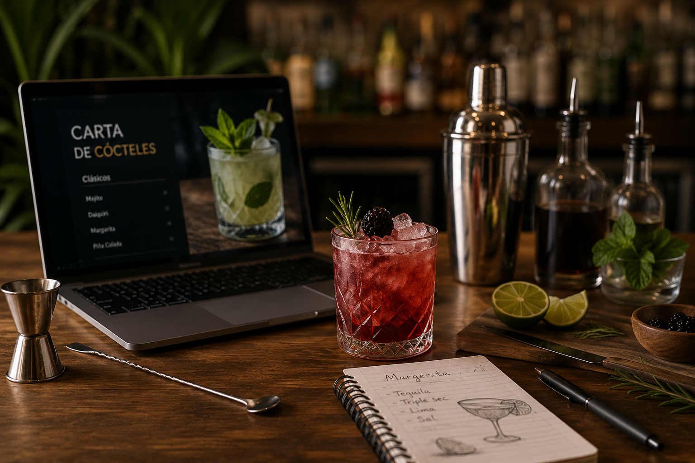

¿Qué encontrarás en este proyecto?
En este proyecto trabajaréis de forma práctica y creativa la elaboración de una carta digital de cócteles, combinando contenidos relacionados con la coctelería, el servicio en bar-cafetería y el uso de herramientas digitales aplicadas al ámbito profesional de la restauración.
A lo largo de las diferentes sesiones desarrollaréis actividades de investigación, diseño, elaboración y presentación, trabajando tanto de manera individual como en equipo. Además, utilizaréis recursos digitales y herramientas colaborativas que os ayudarán a crear un producto final atractivo, dinámico y cercano a situaciones reales del sector hostelero.
Contenidos del Proyecto:
- Introducción
- Protección de datos y seguridad digital
- Producto Final
- Herramientas de curación y recursos digitales
- Línea temporal del proyecto
- Guía didáctica
- Criterios de evaluación asociados a las actividades
- Instrumentos de evaluación
- Conclusión
Este recorrido os permitirá no solo aprender contenidos técnicos sobre coctelería y servicio, sino también desarrollar competencias digitales, creatividad, trabajo colaborativo y habilidades de comunicación fundamentales para vuestro futuro profesional.
